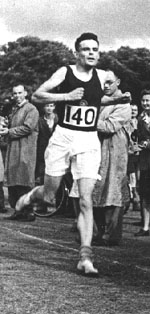

where data is our observations. They can be actively or passively acquired (meta-data). The model contains our assumptions, based on previous experience. THat experience can be other data, it can come from transfer learning, or it can merely be our beliefs about the regularities of the universe. In humans our models include our inductive biases. The prediction is an action to be taken or a categorization or a quality score. The reason that machine learning has become a mainstay of artificial intelligence is the importance of predictions in artificial intelligence. The data and the model are combined through computation.
In practice we normally perform machine learning using two functions. To combine data with a model we typically make use of:
a prediction function a function which is used to make the predictions. It includes our beliefs about the regularities of the universe, our assumptions about how the world works, e.g. smoothness, spatial similarities, temporal similarities.
an objective function a function which defines the cost of misprediction. Typically it includes knowledge about the world's generating processes (probabilistic objectives) or the costs we pay for mispredictions (empiricial risk minimization).
The combination of data and model through the prediction function and the objectie function leads to a learning algorithm. The class of prediction functions and objective functions we can make use of is restricted by the algorithms they lead to. If the prediction function or the objective function are too complex, then it can be difficult to find an appropriate learning algorithm. Much of the acdemic field of machine learning is the quest for new learning algorithms that allow us to bring different types of models and data together.
import numpy as np
import matplotlib.pyplot as plt
import pods
import teaching_plots as plot
import mlai
Olympic Marathon Data
The first thing we will do is load a standard data set for regression modelling. The data consists of the pace of Olympic Gold Medal Marathon winners for the Olympics from 1896 to present. First we load in the data and plot.
Things to notice about the data include the outlier in 1904, in this year, the olympics was in St Louis, USA. Organizational problems and challenges with dust kicked up by the cars following the race meant that participants got lost, and only very few participants completed.
More recent years see more consistently quick marathons.
Regression: Linear Releationship
For many their first encounter with what might be termed a machine learning method is fitting a straight line. A straight line is characterized by two parameters, the scale, \(m\), and the offset \(c\).
\[\dataScalar_i = m \inputScalar_i + c\]
For the olympic marathon example \(\dataScalar_i\) is the winning pace and it is given as a function of the year which is represented by \(\inputScalar_i\). There are two further parameters of the prediction function. For the olympics example we can interpret these parameters, the scale \(m\) is the rate of improvement of the olympic marathon pace on a yearly basis. And \(c\) is the winning pace as estimated at year 0.
Overdetermined System
The challenge with a linear model is that it has two unknowns, \(m\), and \(c\). Observing data allows us to write down a system of simultaneous linear equations. So, for example if we observe two data points, the first with the input value, \(\inputScalar_1 = 1\) and the output value, \(\dataScalar_1 =3\) and a second data point, \(\inputScalar = 3\), \(\dataScalar=1\), then we can write two simultaneous linear equations of the form.
point 1: \(\inputScalar = 1\), \(\dataScalar=3\)\[3 = m + c\] point 2: \(\inputScalar = 3\), \(\dataScalar=1\)\[1 = 3m + c\]
The solution to these two simultaneous equations can be represented graphically as
The solution of two linear equations represented as the fit of a straight line through two data
The challenge comes when a third data point is observed and it doesn't naturally fit on the straight line.
point 3: \(\inputScalar = 2\), \(\dataScalar=2.5\)\[2.5 = 2m + c\]
A third observation of data is inconsistent with the solution dictated by the first two observations
Now there are three candidate lines, each consistent with our data.
Three solutions to the problem, each consistent with two points of the three observations
This is known as an overdetermined system because there are more data than we need to determine our parameters. The problem arises because the model is a simplification of the real world, and the data we observe is therefore inconsistent with our model.
The solution was proposed by Pierre-Simon Laplace. His idea was to accept that the model was an incomplete representation of the real world, and the manner in which it was incomplete is unknown. His idea was that such unknowns could be dealt with through probability.
Famously, Laplace considered the idea of a deterministic Universe, one in which the model is known, or as the below translation refers to it, "an intelligence which could comprehend all the forces by which nature is animated". He speculates on an "intelligence" that can submit this vast data to analysis and propsoses that such an entity would be able to predict the future.
Given for one instant an intelligence which could comprehend all the forces by which nature is animated and the respective situation of the beings who compose it---an intelligence sufficiently vast to submit these data to analysis---it would embrace in the same formulate the movements of the greatest bodies of the universe and those of the lightest atom; for it, nothing would be uncertain and the future, as the past, would be present in its eyes.
This notion is known as Laplace's demon or Laplace's superman.
Unfortunately, most analyses of his ideas stop at that point, whereas his real point is that such a notion is unreachable. Not so much superman as strawman. Just three pages later in the "Philosophical Essay on Probabilities" (Laplace, 1814), Laplace goes on to observe:
The curve described by a simple molecule of air or vapor is regulated in a manner just as certain as the planetary orbits; the only difference between them is that which comes from our ignorance.
Probability is relative, in part to this ignorance, in part to our knowledge.
In other words, we can never utilize the idealistic deterministc Universe due to our ignorance about the world, Laplace's suggestion, and focus in this essay is that we turn to probability to deal with this uncertainty. This is also our inspiration for using probabilit in machine learning.
The "forces by which nature is animated" is our model, the "situation of beings that compose it" is our data and the "intelligence sufficiently vast enough to submit these data to analysis" is our compute. The fly in the ointment is our ignorance about these aspects. And probability is the tool we use to incorporate this ignorance leading to uncertainty or doubt in our predictions.
Laplace's concept was that the reason that the data doesn't match up to the model is because of unconsidered factors, and that these might be well represented through probability densities. He tackles the challenge of the unknown factors by adding a variable, \(\noiseScalar\), that represents the unknown. In modern parlance we would call this a latent variable. But in the context Laplace uses it, the variable is so common that it has other names such as a "slack" variable or the noise in the system.
point 1: \(\inputScalar = 1\), \(\dataScalar=3\)\[
3 = m + c + \noiseScalar_1
\] point 2: \(\inputScalar = 3\), \(\dataScalar=1\)\[
1 = 3m + c + \noiseScalar_2
\] point 3: \(\inputScalar = 2\), \(\dataScalar=2.5\)\[
2.5 = 2m + c + \noiseScalar_3
\]
Laplace's trick has converted the overdetermined system into an underdetermined system. He has now added three variables, \(\{\noiseScalar_i\}_{i=1}^3\), which represent the unknown corruptions of the real world. Laplace's idea is that we should represent that unknown corruption with a probability distribution.
A Probabilistic Process
However, it was left to an admirer of Gauss to develop a practical probability density for that purpose. It was Carl Friederich Gauss who suggested that the Gaussian density (which at the time was unnamed!) should be used to represent this error.
The result is a noisy function, a function which has a deterministic part, and a stochastic part. This type of function is sometimes known as a probabilistic or stochastic process, to distinguish it from a deterministic process.
The Gaussian Density
The Gaussian density is perhaps the most commonly used probability density. It is defined by a mean, \(\meanScalar\), and a variance, \(\dataStd^2\). The variance is taken to be the square of the standard deviation, \(\dataStd\).
The Gaussian PDF with \({\meanScalar}=1.7\) and variance \({\dataStd}^2=0.0225\). Mean shown as cyan line. It could represent the heights of a population of students.
Two Important Gaussian Properties
The Gaussian density has many important properties, but for the moment we'll review two of them.
Sum of Gaussians
If we assume that a variable, \(\dataScalar_i\), is sampled from a Gaussian density,
Then we can show that the sum of a set of variables, each drawn independently from such a density is also distributed as Gaussian. The mean of the resulting density is the sum of the means, and the variance is the sum of the variances,
Since we are very familiar with the Gaussian density and its properties, it is not immediately apparent how unusual this is. Most random variables, when you add them together, change the family of density they are drawn from. For example, the Gaussian is exceptional in this regard. Indeed, other random variables, if they are independently drawn and summed together tend to a Gaussian density. That is the central limit theorem which is a major justification for the use of a Gaussian density.
Scaling a Gaussian
Less unusual is the scaling property of a Gaussian density. If a variable, \(\dataScalar\), is sampled from a Gaussian density,
\[\dataScalar \sim \gaussianSamp{\meanScalar}{\sigma^2}\] and we choose to scale that variable by a deterministic value, \(\mappingScalar\), then the scaled variable is distributed as
\[\mappingScalar \dataScalar \sim \gaussianSamp{\mappingScalar\meanScalar}{\mappingScalar^2 \sigma^2}.\] Unlike the summing properties, where adding two or more random variables independently sampled from a family of densitites typically brings the summed variable outside that family, scaling many densities leaves the distribution of that variable in the same family of densities. Indeed, many densities include a scale parameter (e.g. the Gamma density) which is purely for this purpose. In the Gaussian the standard deviation, \(\dataStd\), is the scale parameter. To see why this makes sense, let's consider, \[z \sim \gaussianSamp{0}{1},\] then if we scale by \(\dataStd\) so we have, \(\dataScalar=\dataStd z\), we can write, \[\dataScalar =\dataStd z \sim \gaussianSamp{0}{\dataStd^2}\]
Laplace's Idea
A Probabilistic Process
Laplace had the idea to augment the observations by noise, that is equivalent to considering a probability density whose mean is given by the prediction function\[p\left(\dataScalar_i|\inputScalar_i\right)=\frac{1}{\sqrt{2\pi\dataStd^2}}\exp\left(-\frac{\left(\dataScalar_i-f\left(\inputScalar_i\right)\right)^{2}}{2\dataStd^2}\right).\]
This is known as stochastic process. It is a function that is corrupted by noise. Laplace didn't suggest the Gaussian density for that purpose, that was an innovation from Carl Friederich Gauss, which is what gives the Gaussian density its name.
Height as a Function of Weight
In the standard Gaussian, parametized by mean and variance.
Make the mean a linear function of an input.
This leads to a regression model. \[
\begin{align*}
\dataScalar_i=&\mappingFunction\left(\inputScalar_i\right)+\noiseScalar_i,\\
\noiseScalar_i \sim & \gaussianSamp{0}{\dataStd^2}.
\end{align*}
\]
Assume \(\dataScalar_i\) is height and \(\inputScalar_i\) is weight.
Likelihood of an individual data point \[
p\left(\dataScalar_i|\inputScalar_i,m,c\right)=\frac{1}{\sqrt{2\pi \dataStd^2}}\exp\left(-\frac{\left(\dataScalar_i-m\inputScalar_i-c\right)^{2}}{2\dataStd^2}\right).
\] Parameters are gradient, \(m\), offset, \(c\) of the function and noise variance \(\dataStd^2\).
Data Set Likelihood
If the noise, \(\epsilon_i\) is sampled independently for each data point. Each data point is independent (given \(m\) and \(c\)). For independent variables: \[
p(\dataVector) = \prod_{i=1}^\numData p(\dataScalar_i)
\]\[
p(\dataVector|\inputVector, m, c) = \prod_{i=1}^\numData p(\dataScalar_i|\inputScalar_i, m, c)
\]
For Gaussian
i.i.d. assumption \[
p(\dataVector|\inputVector, m, c) = \prod_{i=1}^\numData \frac{1}{\sqrt{2\pi \dataStd^2}}\exp \left(-\frac{\left(\dataScalar_i- m\inputScalar_i-c\right)^{2}}{2\dataStd^2}\right).
\]\[
p(\dataVector|\inputVector, m, c) = \frac{1}{\left(2\pi \dataStd^2\right)^{\frac{\numData}{2}}}\exp\left(-\frac{\sum_{i=1}^\numData\left(\dataScalar_i-m\inputScalar_i-c\right)^{2}}{2\dataStd^2}\right).
\]
Log Likelihood Function
Normally work with the log likelihood: \[
L(m,c,\dataStd^{2})=-\frac{\numData}{2}\log 2\pi -\frac{\numData}{2}\log \dataStd^2 -\sum_{i=1}^{\numData}\frac{\left(\dataScalar_i-m\inputScalar_i-c\right)^{2}}{2\dataStd^2}.
\]
Consistency of Maximum Likelihood
If data was really generated according to probability we specified.
Correct parameters will be recovered in limit as \(\numData \rightarrow \infty\).
This can be proven through sample based approximations (law of large numbers) of "KL divergences".
Mainstay of classical statistics.
Probabilistic Interpretation of the Error Function
Probabilistic Interpretation for Error Function is Negative Log Likelihood.
Minimizing error function is equivalent to maximizing log likelihood.
Maximizing log likelihood is equivalent to maximizing the likelihood because \(\log\) is monotonic.
Probabilistic interpretation: Minimizing error function is equivalent to maximum likelihood with respect to parameters.
Error Function
Negative log likelihood is the error function leading to an error function \[\errorFunction(m,c,\dataStd^{2})=\frac{\numData}{2}\log \dataStd^2+\frac{1}{2\dataStd^2}\sum _{i=1}^{\numData}\left(\dataScalar_i-m\inputScalar_i-c\right)^{2}.\]
Learning proceeds by minimizing this error function for the data set provided.
Connection: Sum of Squares Error
Ignoring terms which don’t depend on \(m\) and \(c\) gives \[\errorFunction(m, c) \propto \sum_{i=1}^\numData (\dataScalar_i - \mappingFunction(\inputScalar_i))^2\] where \(\mappingFunction(\inputScalar_i) = m\inputScalar_i + c\).
This is known as the sum of squares error function.
Commonly used and is closely associated with the Gaussian likelihood.
Error, or Objective function: \(\errorFunction(m, c)\)
Error function depends on parameters through prediction function.
Mathematical Interpretation
What is the mathematical interpretation?
There is a cost function.
It expresses mismatch between your prediction and reality. \[
\errorFunction(m, c)=\sum_{i=1}^\numData \left(\dataScalar_i - m\inputScalar_i-c\right)^2
\]
This is known as the sum of squares error.
Sum of Squares Error
Minimizing the sum of squares error was first proposed by Legendre in 1805. His book, which was on the orbit of comets, is available on google books, we can take a look at the relevant page by calling the code below.
Of course, the main text is in French, but the key part we are interested in can be roughly translated as
In most matters where we take measures data through observation, the most accurate results they can offer, it is almost always leads to a system of equations of the form \[E = a + bx + cy + fz + etc .\] where \(a\), \(b\), \(c\), \(f\) etc are the known coefficients and \(x\), \(y\), \(z\) etc are unknown and must be determined by the condition that the value of E is reduced, for each equation, to an amount or zero or very small.
He continues
Of all the principles that we can offer for this item, I think it is not broader, more accurate, nor easier than the one we have used in previous research application, and that is to make the minimum sum of the squares of the errors. By this means, it is between the errors a kind of balance that prevents extreme to prevail, is very specific to make known the state of the closest to the truth system. The sum of the squares of the errors \(E^2 + \left.E^\prime\right.^2 + \left.E^{\prime\prime}\right.^2 + etc\) being
\[\begin{align*} &(a + bx + cy + fz + etc)^2 \\
+ &(a^\prime +
b^\prime x + c^\prime y + f^\prime z + etc ) ^2\\
+ &(a^{\prime\prime} +
b^{\prime\prime}x + c^{\prime\prime}y + f^{\prime\prime}z + etc )^2 \\
+ & etc
\end{align*}\]
if we wanted a minimum, by varying x alone, we will have the equation ...
This is the earliest know printed version of the problem of least squares. The notation, however, is a little awkward for mordern eyes. In particular Legendre doesn't make use of the sum sign, \[
\sum_{i=1}^3 z_i = z_1
+ z_2 + z_3
\] nor does he make use of the inner product.
In our notation, if we were to do linear regression, we would need to subsititue: \[\begin{align*}
a &\leftarrow \dataScalar_1-c, \\ a^\prime &\leftarrow \dataScalar_2-c,\\ a^{\prime\prime} &\leftarrow
\dataScalar_3 -c,\\
\text{etc.}
\end{align*}\] to introduce the data observations \(\{\dataScalar_i\}_{i=1}^{\numData}\) alongside \(c\), the offset. We would then introduce the input locations \[\begin{align*}
b & \leftarrow \inputScalar_1,\\
b^\prime & \leftarrow \inputScalar_2,\\
b^{\prime\prime} & \leftarrow \inputScalar_3\\
\text{etc.}
\end{align*}\] and finally the gradient of the function \[x \leftarrow -m.\] The remaining coefficients (\(c\) and \(f\)) would then be zero. That would give us \[\begin{align*} &(\dataScalar_1 -
(m\inputScalar_1+c))^2 \\
+ &(\dataScalar_2 -(m\inputScalar_2 + c))^2\\
+ &(\dataScalar_3 -(m\inputScalar_3 + c))^2 \\
+ &
\text{etc.}
\end{align*}\] which we would write in the modern notation for sums as \[
\sum_{i=1}^\numData (\dataScalar_i-(m\inputScalar_i + c))^2
\] which is recognised as the sum of squares error for a linear regression.
This shows the advantage of modern summation operator, \(\sum\), in keeping our mathematical notation compact. Whilst it may look more complicated the first time you see it, understanding the mathematical rules that go around it, allows us to go much further with the notation.
Inner products (or dot products) are similar. They allow us to write \[
\sum_{i=1}^q u_i v_i
\] in a more compact notation, \(\mathbf{u}\cdot\mathbf{v}.\)
Here we are using bold face to represent vectors, and we assume that the individual elements of a vector \(\mathbf{z}\) are given as a series of scalars \[
\mathbf{z} = \begin{bmatrix} z_1\\ z_2\\ \vdots\\ z_\numData
\end{bmatrix}
\] which are each indexed by their position in the vector.
Linear Algebra
Linear algebra provides a very similar role, when we introduce linear algebra, it is because we are faced with a large number of addition and multiplication operations. These operations need to be done together and would be very tedious to write down as a group. So the first reason we reach for linear algebra is for a more compact representation of our mathematical formulae.
Running Example: Olympic Marathons
Now we will load in the Olympic marathon data. This is data of the olympic marath times for the men's marathon from the first olympics in 1896 up until the London 2012 olympics.
data = pods.datasets.olympic_marathon_men()
x = data['X']
y = data['Y']
You can see what these values are by typing:
print(x)
print(y)
Note that they are not pandas data frames for this example, they are just arrays of dimensionality \(\numData\times 1\), where \(\numData\) is the number of data.
The aim of this lab is to have you coding linear regression in python. We will do it in two ways, once using iterative updates (coordinate ascent) and then using linear algebra. The linear algebra approach will not only work much better, it is easy to extend to multiple input linear regression and non-linear regression using basis functions.
Plotting the Data
You can make a plot of \(\dataScalar\) vs \(\inputScalar\) with the following command:
%matplotlib inline
import matplotlib.pyplot as plt
plt.plot(x, y, 'rx')
plt.xlabel('year')
plt.ylabel('pace in min/km')
Maximum Likelihood: Iterative Solution
Now we will take the maximum likelihood approach we derived in the lecture to fit a line, \(\dataScalar_i=m\inputScalar_i + c\), to the data you've plotted. We are trying to minimize the error function: \[
\errorFunction(m, c) = \sum_{i=1}^\numData(\dataScalar_i-m\inputScalar_i-c)^2
\] with respect to \(m\), \(c\) and \(\sigma^2\). We can start with an initial guess for \(m\),
m =-0.4
c =80
Then we use the maximum likelihood update to find an estimate for the offset, \(c\).
Coordinate Descent
In the movie recommender system example, we minimised the objective function by steepest descent based gradient methods. Our updates required us to compute the gradient at the position we were located, then to update the gradient according to the direction of steepest descent. This time, we will take another approach. It is known as coordinate descent. In coordinate descent, we choose to move one parameter at a time. Ideally, we design an algorithm that at each step moves the parameter to its minimum value. At each step we choose to move the individual parameter to its minimum.
To find the minimum, we look for the point in the curve where the gradient is zero. This can be found by taking the gradient of \(\errorFunction(m,c)\) with respect to the parameter.
Update for Offset
Let's consider the parameter \(c\) first. The gradient goes nicely through the summation operator, and we obtain \[
\frac{\text{d}\errorFunction(m,c)}{\text{d}c} = -\sum_{i=1}^\numData 2(\dataScalar_i-m\inputScalar_i-c).
\] Now we want the point that is a minimum. A minimum is an example of a stationary point, the stationary points are those points of the function where the gradient is zero. They are found by solving the equation for \(\frac{\text{d}\errorFunction(m,c)}{\text{d}c} = 0\). Substituting in to our gradient, we can obtain the following equation, \[
0 = -\sum_{i=1}^\numData 2(\dataScalar_i-m\inputScalar_i-c)
\] which can be reorganised as follows, \[
c^* = \frac{\sum_{i=1}^\numData(\dataScalar_i-m^*\inputScalar_i)}{\numData}.
\] The fact that the stationary point is easily extracted in this manner implies that the solution is unique. There is only one stationary point for this system. Traditionally when trying to determine the type of stationary point we have encountered we now compute the second derivative, \[
\frac{\text{d}^2\errorFunction(m,c)}{\text{d}c^2} = 2n.
\] The second derivative is positive, which in turn implies that we have found a minimum of the function. This means that setting \(c\) in this way will take us to the lowest point along that axes.
# set c to the minimum
c = (y - m*x).mean()
print(c)
Update for Slope
Now we have the offset set to the minimum value, in coordinate descent, the next step is to optimise another parameter. Only one further parameter remains. That is the slope of the system.
Now we can turn our attention to the slope. We once again peform the same set of computations to find the minima. We end up with an update equation of the following form.
Communication of mathematics in data science is an essential skill, in a moment, you will be asked to rederive the equation above. Before we do that, however, we will briefly review how to write mathematics in the notebook.
\(\LaTeX\) for Maths
These cells use Markdown format. You can include maths in your markdown using \(\LaTeX\) syntax, all you have to do is write your answer inside dollar signs, as follows:
To write a fraction, we write $\frac{a}{b}$, and it will display like this \(\frac{a}{b}\). To write a subscript we write $a_b$ which will appear as \(a_b\). To write a superscript (for example in a polynomial) we write $a^b$ which will appear as \(a^b\). There are lots of other macros as well, for example we can do greek letters such as $\alpha, \beta, \gamma$ rendering as \(\alpha, \beta, \gamma\). And we can do sum and intergral signs as $\sum \int \int$.
You can combine many of these operations together for composing expressions.
Question 1
Convert the following python code expressions into \(\LaTeX\)j, writing your answers below. In each case write your answer as a single equality (i.e. your maths should only contain one expression, not several lines of expressions). For the purposes of your \(\LaTeX\) please assume that x and w are \(n\) dimensional vectors.
Now that you've had a little training in writing maths with \(\LaTeX\), we will be able to use it to answer questions. The next thing we are going to do is a little differentiation practice.
Question 2
Derive the the gradient of the objective function with respect to the slope, \(m\). Rearrange it to show that the update equation written above does find the stationary points of the objective function. By computing its derivative show that it's a minimum.
20 marks
Write your answer to Question 2 here
m = ((y - c)*x).sum()/(x**2).sum()
print(m)
We can have a look at how good our fit is by computing the prediction across the input space. First create a vector of 'test points',
import numpy as np
x_test = np.linspace(1890, 2020, 130)[:, None]
Now use this vector to compute some test predictions,
f_test = m*x_test + c
Now plot those test predictions with a blue line on the same plot as the data,
plt.plot(x_test, f_test, 'b-')
plt.plot(x, y, 'rx')
The fit isn't very good, we need to iterate between these parameter updates in a loop to improve the fit, we have to do this several times,
for i in np.arange(10):
m = ((y - c)*x).sum()/(x*x).sum()
c = (y-m*x).sum()/y.shape[0]
print(m)
print(c)
And let's try plotting the result again
f_test = m*x_test + c
plt.plot(x_test, f_test, 'b-')
plt.plot(x, y, 'rx')
Clearly we need more iterations than 10! In the next question you will add more iterations and report on the error as optimisation proceeds.
Question 3
There is a problem here, we seem to need many interations to get to a good solution. Let's explore what's going on. Write code which alternates between updates of c and m. Include the following features in your code.
Initialise with m=-0.4 and c=80.
Every 10 iterations compute the value of the objective function for the training data and print it to the screen (you'll find hints on this in the lab from last week.
Cause the code to stop running when the error change over less than 10 iterations is smaller than \(1\times10^{-4}\). This is known as a stopping criterion.
Why do we need so many iterations to get to the solution?
25 marks
# Write code for your answer to Question 3 in this box
Important Concepts Not Covered
Other optimization methods:
Second order methods, conjugate gradient, quasi-Newton and Newton.
Effective heuristics such as momentum.
Local vs global solutions.
Reading
Section 1.1-1.2 of Rogers and Girolami (2011) for fitting linear models.
Section 1.2.5 of Bishop (2006) up to equation 1.65.
import numpy as np
import matplotlib.pyplot as plt
import mlai
x = np.random.normal(size=4)
m_true =1.4
c_true =-3.1
y = m_true*x+c_true
plt.plot(x, y, 'r.', markersize=10) # plot data as red dots
plt.xlim([-3, 3])
mlai.write_figure(filename="../slides/diagrams/ml/regression.svg", transparent=True)
Noise Corrupted Plot
noise = np.random.normal(scale=0.5, size=4) # standard deviation of the noise is 0.5
y = m_true*x + c_true + noise
plt.plot(x, y, 'r.', markersize=10)
plt.xlim([-3, 3])
mlai.write_figure(filename="../slides/diagrams/ml/regression_noise.svg", transparent=True)
Contour Plot of Error Function
Visualise the error function surface, create vectors of values.
# create an array of linearly separated values around m_true
m_vals = np.linspace(m_true-3, m_true+3, 100)
# create an array of linearly separated values ae
c_vals = np.linspace(c_true-3, c_true+3, 100)
create a grid of values to evaluate the error function in 2D.
m_grid, c_grid = np.meshgrid(m_vals, c_vals)
compute the error function at each combination of \(c\) and \(m\).
E_grid = np.zeros((100, 100))
for i inrange(100):
for j inrange(100):
E_grid[i, j] = ((y - m_grid[i, j]*x - c_grid[i, j])**2).sum()
c_grad =-2*(y-m_star*x - c_star).sum()
print("Gradient with respect to c is ", c_grad)
Deriving the Gradient
To see how the gradient was derived, first note that the \(c\) appears in every term in the sum. So we are just differentiating \((\dataScalar_i - m\inputScalar_i - c)^2\) for each term in the sum. The gradient of this term with respect to \(c\) is simply the gradient of the outer quadratic, multiplied by the gradient with respect to \(c\) of the part inside the quadratic. The gradient of a quadratic is two times the argument of the quadratic, and the gradient of the inside linear term is just minus one. This is true for all terms in the sum, so we are left with the sum in the gradient.
Slope Gradient
The gradient with respect tom \(m\) is similar, but now the gradient of the quadratic's argument is \(-\inputScalar_i\) so the gradient with respect to \(m\) is
The step size has already been introduced, it's again known as the learning rate and is denoted by \(\learnRate\). \[
c_\text{new}\leftarrow c_{\text{old}} - \learnRate \frac{\text{d}\errorFunction(m, c)}{\text{d}c}
\]
gives us an update for our estimate of \(c\) (which in the code we've been calling c_star to represent a common way of writing a parameter estimate, \(c^*\)) and \[
m_\text{new} \leftarrow m_{\text{old}} - \learnRate \frac{\text{d}\errorFunction(m, c)}{\text{d}m}
\]
Giving us an update for \(m\).
Update Code
These updates can be coded as
print("Original m was", m_star, "and original c was", c_star)
learn_rate =0.01
c_star = c_star - learn_rate*c_grad
m_star = m_star - learn_rate*m_grad
print("New m is", m_star, "and new c is", c_star)
Iterating Updates
Fit model by descending gradient.
Gradient Descent Algorithm
num_plots = plot.regression_contour_fit(x, y, diagrams='../slides/diagrams/ml')
Stochastic gradient descent for linear regression
Stochastic Gradient Descent
If \(\numData\) is small, gradient descent is fine.
But sometimes (e.g. on the internet \(\numData\) could be a billion.
Stochastic gradient descent is more similar to perceptron.
Look at gradient of one data point at a time rather than summing across all data points)
This gives a stochastic estimate of gradient.
Stochastic Gradient Descent
The real gradient with respect to \(m\) is given by
This could be split up into lots of individual updates \[m_1 \leftarrow m_\text{old} + 2\learnRate \left[\inputScalar_1 (\dataScalar_1 - m_\text{old}\inputScalar_1 -
c_\text{old})\right]\]\[m_2 \leftarrow m_1 + 2\learnRate \left[\inputScalar_2 (\dataScalar_2 -
m_\text{old}\inputScalar_2 - c_\text{old})\right]\]\[m_3 \leftarrow m_2 + 2\learnRate
\left[\dots\right]\]\[m_n \leftarrow m_{n-1} + 2\learnRate \left[\inputScalar_n (\dataScalar_n -
m_\text{old}\inputScalar_n - c_\text{old})\right]\]
which would lead to the same final update.
Updating \(c\) and \(m\)
In the sum we don't \(m\) and \(c\) we use for computing the gradient term at each update.
In stochastic gradient descent we do change them.
This means it's not quite the same as steepest desceint.
But we can present each data point in a random order, like we did for the perceptron.
This makes the algorithm suitable for large scale web use (recently this domain is know as 'Big Data') and algorithms like this are widely used by Google, Microsoft, Amazon, Twitter and Facebook.
Stochastic Gradient Descent
Or more accurate, since the data is normally presented in a random order we just can write \[
m_\text{new} = m_\text{old} + 2\learnRate\left[\inputScalar_i (\dataScalar_i - m_\text{old}\inputScalar_i - c_\text{old})\right]
\]
# choose a random point for the update
i = np.random.randint(x.shape[0]-1)
# update m
m_star = m_star +2*learn_rate*(x[i]*(y[i]-m_star*x[i] - c_star))
# update c
c_star = c_star +2*learn_rate*(y[i]-m_star*x[i] - c_star)
SGD for Linear Regression
Putting it all together in an algorithm, we can do stochastic gradient descent for our regression data.
num_plots = plot.regression_contour_sgd(x, y, diagrams='../slides/diagrams/ml')
Stochastic gradient descent for linear regression
Reflection on Linear Regression and Supervised Learning
Think about:
What effect does the learning rate have in the optimization? What's the effect of making it too small, what's the effect of making it too big? Do you get the same result for both stochastic and steepest gradient descent?
The stochastic gradient descent doesn't help very much for such a small data set. It's real advantage comes when there are many, you'll see this in the lab.
Multiple Input Solution with Linear Algebra
You've now seen how slow it can be to perform a coordinate ascent on a system. Another approach to solving the system (which is not always possible, particularly in non-linear systems) is to go direct to the minimum. To do this we need to introduce linear algebra. We will represent all our errors and functions in the form of linear algebra. As we mentioned above, linear algebra is just a shorthand for performing lots of multiplications and additions simultaneously. What does it have to do with our system then? Well the first thing to note is that the linear function we were trying to fit has the following form: \[
\mappingFunction(x) = mx + c
\] the classical form for a straight line. From a linear algebraic perspective we are looking for multiplications and additions. We are also looking to separate our parameters from our data. The data is the givens remember, in French the word is données literally translated means givens that's great, because we don't need to change the data, what we need to change are the parameters (or variables) of the model. In this function the data comes in through \(x\), and the parameters are \(m\) and \(c\).
What we'd like to create is a vector of parameters and a vector of data. Then we could represent the system with vectors that represent the data, and vectors that represent the parameters.
We look to turn the multiplications and additions into a linear algebraic form, we have one multiplication (\(m\times c\) and one addition (\(mx + c\)). But we can turn this into a inner product by writing it in the following way, \[
\mappingFunction(x) = m \times x +
c \times 1,
\] in other words we've extracted the unit value, from the offset, \(c\). We can think of this unit value like an extra item of data, because it is always given to us, and it is always set to 1 (unlike regular data, which is likely to vary!). We can therefore write each input data location, \(\inputVector\), as a vector \[
\inputVector = \begin{bmatrix} 1\\ x\end{bmatrix}.
\]
Now we choose to also turn our parameters into a vector. The parameter vector will be defined to contain \[
\mappingVector = \begin{bmatrix} c \\ m\end{bmatrix}
\] because if we now take the inner product between these to vectors we recover \[
\inputVector\cdot\mappingVector = 1 \times c + x \times m = mx + c
\] In numpy we can define this vector as follows
# define the vector w
w = np.zeros(shape=(2, 1))
w[0] = m
w[1] = c
This gives us the equivalence between original operation and an operation in vector space. Whilst the notation here isn't a lot shorter, the beauty is that we will be able to add as many features as we like and still keep the seame representation. In general, we are now moving to a system where each of our predictions is given by an inner product. When we want to represent a linear product in linear algebra, we tend to do it with the transpose operation, so since we have \(\mathbf{a}\cdot\mathbf{b} = \mathbf{a}^\top\mathbf{b}\) we can write \[
\mappingFunction(\inputVector_i) = \inputVector_i^\top\mappingVector.
\] Where we've assumed that each data point, \(\inputVector_i\), is now written by appending a 1 onto the original vector \[
\inputVector_i = \begin{bmatrix}
1 \\
\inputScalar_i
\end{bmatrix}
\]
Design Matrix
We can do this for the entire data set to form a design matrix\(\inputMatrix\),
which in numpy can be done with the following commands:
X = np.hstack((np.ones_like(x), x))
print(X)
Writing the Objective with Linear Algebra
When we think of the objective function, we can think of it as the errors where the error is defined in a similar way to what it was in Legendre's day \(\dataScalar_i - \mappingFunction(\inputVector_i)\), in statistics these errors are also sometimes called residuals. So we can think as the objective and the prediction function as two separate parts, first we have, \[
\errorFunction(\mappingVector) = \sum_{i=1}^\numData (\dataScalar_i - \mappingFunction(\inputVector_i; \mappingVector))^2,
\] where we've made the function \(\mappingFunction(\cdot)\)'s dependence on the parameters \(\mappingVector\) explicit in this equation. Then we have the definition of the function itself, \[
\mappingFunction(\inputVector_i; \mappingVector) = \inputVector_i^\top \mappingVector.
\] Let's look again at these two equations and see if we can identify any inner products. The first equation is a sum of squares, which is promising. Any sum of squares can be represented by an inner product, \[
a = \sum_{i=1}^{k} b^2_i = \mathbf{b}^\top\mathbf{b},
\] so if we wish to represent \(\errorFunction(\mappingVector)\) in this way, all we need to do is convert the sum operator to an inner product. We can get a vector from that sum operator by placing both \(\dataScalar_i\) and \(\mappingFunction(\inputVector_i; \mappingVector)\) into vectors, which we do by defining \[
\dataVector = \begin{bmatrix}\dataScalar_1\\ \dataScalar_2\\ \vdots \\ \dataScalar_\numData\end{bmatrix}
\] and defining \[
\mappingFunctionVector(\inputVector_1; \mappingVector) = \begin{bmatrix}\mappingFunction(\inputVector_1; \mappingVector)\\ \mappingFunction(\inputVector_2; \mappingVector)\\ \vdots \\ \mappingFunction(\inputVector_\numData; \mappingVector)\end{bmatrix}.
\] The second of these is actually a vector-valued function. This term may appear intimidating, but the idea is straightforward. A vector valued function is simply a vector whose elements are themselves defined as functions, i.e. it is a vector of functions, rather than a vector of scalars. The idea is so straightforward, that we are going to ignore it for the moment, and barely use it in the derivation. But it will reappear later when we introduce basis functions. So we will, for the moment, ignore the dependence of \(\mappingFunctionVector\) on \(\mappingVector\) and \(\inputMatrix\) and simply summarise it by a vector of numbers \[
\mappingFunctionVector = \begin{bmatrix}\mappingFunction_1\\\mappingFunction_2\\
\vdots \\ \mappingFunction_\numData\end{bmatrix}.
\] This allows us to write our objective in the folowing, linear algebraic form, \[
\errorFunction(\mappingVector) = (\dataVector - \mappingFunctionVector)^\top(\dataVector - \mappingFunctionVector)
\] from the rules of inner products. But what of our matrix \(\inputMatrix\) of input data? At this point, we need to dust off matrix-vector multiplication. Matrix multiplication is simply a convenient way of performing many inner products together, and it's exactly what we need to summarise the operation \[
f_i = \inputVector_i^\top\mappingVector.
\] This operation tells us that each element of the vector \(\mappingFunctionVector\) (our vector valued function) is given by an inner product between \(\inputVector_i\) and \(\mappingVector\). In other words it is a series of inner products. Let's look at the definition of matrix multiplication, it takes the form \[
\mathbf{c} = \mathbf{B}\mathbf{a}
\] where \(\mathbf{c}\) might be a \(k\) dimensional vector (which we can intepret as a \(k\times 1\) dimensional matrix), and \(\mathbf{B}\) is a \(k\times k\) dimensional matrix and \(\mathbf{a}\) is a \(k\) dimensional vector (\(k\times 1\) dimensional matrix).
The result of this multiplication is of the form \[
\begin{bmatrix}c_1\\c_2 \\ \vdots \\
a_k\end{bmatrix} =
\begin{bmatrix} b_{1,1} & b_{1, 2} & \dots & b_{1, k} \\
b_{2, 1} & b_{2, 2} & \dots & b_{2, k} \\
\vdots & \vdots & \ddots & \vdots \\
b_{k, 1} & b_{k, 2} & \dots & b_{k, k} \end{bmatrix} \begin{bmatrix}a_1\\a_2 \\
\vdots\\ c_k\end{bmatrix} = \begin{bmatrix} b_{1, 1}a_1 + b_{1, 2}a_2 + \dots +
b_{1, k}a_k\\
b_{2, 1}a_1 + b_{2, 2}a_2 + \dots + b_{2, k}a_k \\
\vdots\\
b_{k, 1}a_1 + b_{k, 2}a_2 + \dots + b_{k, k}a_k\end{bmatrix}
\] so we see that each element of the result, \(\mathbf{a}\) is simply the inner product between each row of \(\mathbf{B}\) and the vector \(\mathbf{c}\). Because we have defined each element of \(\mappingFunctionVector\) to be given by the inner product between each row of the design matrix and the vector \(\mappingVector\) we now can write the full operation in one matrix multiplication, \[
\mappingFunctionVector = \inputMatrix\mappingVector.
\]
f = np.dot(X, w) # np.dot does matrix multiplication in python
Combining this result with our objective function, \[
\errorFunction(\mappingVector) = (\dataVector - \mappingFunctionVector)^\top(\dataVector - \mappingFunctionVector)
\] we find we have defined the model with two equations. One equation tells us the form of our predictive function and how it depends on its parameters, the other tells us the form of our objective function.
resid = (y-f)
E = np.dot(resid.T, resid) # matrix multiplication on a single vector is equivalent to a dot product.print("Error function is:", E)
Question 4
The prediction for our movie recommender system had the form \[
f_{i,j} = \mathbf{u}_i^\top \mathbf{v}_j
\] and the objective function was then \[
E = \sum_{i,j} s_{i,j}(\dataScalar_{i,j} - f_{i, j})^2
\] Try writing this down in matrix and vector form. How many of the terms can you do? For each variable and parameter carefully think about whether it should be represented as a matrix or vector. Do as many of the terms as you can. Use \(\LaTeX\) to give your answers and give the dimensions of any matrices you create.
20 marks
Write your answer to Question 4 here
Objective Optimisation
Our model has now been defined with two equations, the prediction function and the objective function. Next we will use multivariate calculus to define an algorithm to fit the model. The separation between model and algorithm is important and is often overlooked. Our model contains a function that shows how it will be used for prediction, and a function that describes the objective function we need to optimise to obtain a good set of parameters.
The model linear regression model we have described is still the same as the one we fitted above with a coordinate ascent algorithm. We have only played with the notation to obtain the same model in a matrix and vector notation. However, we will now fit this model with a different algorithm, one that is much faster. It is such a widely used algorithm that from the end user's perspective it doesn't even look like an algorithm, it just appears to be a single operation (or function). However, underneath the computer calls an algorithm to find the solution. Further, the algorithm we obtain is very widely used, and because of this it turns out to be highly optimised.
Once again we are going to try and find the stationary points of our objective by finding the stationary points. However, the stationary points of a multivariate function, are a little bit more complext to find. Once again we need to find the point at which the derivative is zero, but now we need to use multivariate calculus to find it. This involves learning a few additional rules of differentiation (that allow you to do the derivatives of a function with respect to vector), but in the end it makes things quite a bit easier. We define vectorial derivatives as follows, \[
\frac{\text{d}\errorFunction(\mappingVector)}{\text{d}\mappingVector} =
\begin{bmatrix}\frac{\text{d}\errorFunction(\mappingVector)}{\text{d}\mappingScalar_1}\\\frac{\text{d}\errorFunction(\mappingVector)}{\text{d}\mappingScalar_2}\end{bmatrix}.
\] where \(\frac{\text{d}\errorFunction(\mappingVector)}{\text{d}\mappingScalar_1}\) is the partial derivative of the error function with respect to \(\mappingScalar_1\).
Differentiation through multiplications and additions is relatively straightforward, and since linear algebra is just multiplication and addition, then its rules of diffentiation are quite straightforward too, but slightly more complex than regular derivatives.
Multivariate Derivatives
We will need two rules of multivariate or matrix differentiation. The first is diffentiation of an inner product. By remembering that the inner product is made up of multiplication and addition, we can hope that its derivative is quite straightforward, and so it proves to be. We can start by thinking about the definition of the inner product, \[
\mathbf{a}^\top\mathbf{z} = \sum_{i} a_i
z_i,
\] which if we were to take the derivative with respect to \(z_k\) would simply return the gradient of the one term in the sum for which the derivative was non zero, that of \(a_k\), so we know that \[
\frac{\text{d}}{\text{d}z_k} \mathbf{a}^\top \mathbf{z} = a_k
\] and by our definition of multivariate derivatives we can simply stack all the partial derivatives of this form in a vector to obtain the result that \[
\frac{\text{d}}{\text{d}\mathbf{z}}
\mathbf{a}^\top \mathbf{z} = \mathbf{a}.
\] The second rule that's required is differentiation of a 'matrix quadratic'. A scalar quadratic in \(z\) with coefficient \(c\) has the form \(cz^2\). If \(\mathbf{z}\) is a \(k\times 1\) vector and \(\mathbf{C}\) is a \(k \times k\)matrix of coefficients then the matrix quadratic form is written as \(\mathbf{z}^\top \mathbf{C}\mathbf{z}\), which is itself a scalar quantity, but it is a function of a vector.
Matching Dimensions in Matrix Multiplications
There's a trick for telling that it's a scalar result. When you are doing maths with matrices, it's always worth pausing to perform a quick sanity check on the dimensions. Matrix multplication only works when the dimensions match. To be precise, the 'inner' dimension of the matrix must match. What is the inner dimension. If we multiply two matrices \(\mathbf{A}\) and \(\mathbf{B}\), the first of which has \(k\) rows and \(\ell\) columns and the second of which has \(p\) rows and \(q\) columns, then we can check whether the multiplication works by writing the dimensionalities next to each other, \[
\mathbf{A} \mathbf{B} \rightarrow (k \times
\underbrace{\ell)(p}_\text{inner dimensions} \times q) \rightarrow (k\times q).
\] The inner dimensions are the two inside dimensions, \(\ell\) and \(p\). The multiplication will only work if \(\ell=p\). The result of the multiplication will then be a \(k\times q\) matrix: this dimensionality comes from the 'outer dimensions'. Note that matrix multiplication is not commutative. And if you change the order of the multiplication, \[
\mathbf{B} \mathbf{A} \rightarrow (\ell \times \underbrace{k)(q}_\text{inner dimensions} \times p) \rightarrow (\ell \times p).
\] firstly it may no longer even work, because now the condition is that \(k=q\), and secondly the result could be of a different dimensionality. An exception is if the matrices are square matrices (e.g. same number of rows as columns) and they are both symmetric. A symmetric matrix is one for which \(\mathbf{A}=\mathbf{A}^\top\), or equivalently, \(a_{i,j} = a_{j,i}\) for all \(i\) and \(j\).
You will need to get used to working with matrices and vectors applying and developing new machine learning techniques. You should have come across them before, but you may not have used them as extensively as we will now do in this course. You should get used to using this trick to check your work and ensure you know what the dimension of an output matrix should be. For our matrix quadratic form, it turns out that we can see it as a special type of inner product. \[
\mathbf{z}^\top\mathbf{C}\mathbf{z} \rightarrow (1\times
\underbrace{k) (k}_\text{inner dimensions}\times k) (k\times 1) \rightarrow
\mathbf{b}^\top\mathbf{z}
\] where \(\mathbf{b} = \mathbf{C}\mathbf{z}\) so therefore the result is a scalar, \[
\mathbf{b}^\top\mathbf{z} \rightarrow
(1\times \underbrace{k) (k}_\text{inner dimensions}\times 1) \rightarrow
(1\times 1)
\] where a \((1\times 1)\) matrix is recognised as a scalar.
This implies that we should be able to differentiate this form, and indeed the rule for its differentiation is slightly more complex than the inner product, but still quite simple, \[
\frac{\text{d}}{\text{d}\mathbf{z}}
\mathbf{z}^\top\mathbf{C}\mathbf{z}= \mathbf{C}\mathbf{z} + \mathbf{C}^\top
\mathbf{z}.
\] Note that in the special case where \(\mathbf{C}\) is symmetric then we have \(\mathbf{C} = \mathbf{C}^\top\) and the derivative simplifies to \[
\frac{\text{d}}{\text{d}\mathbf{z}} \mathbf{z}^\top\mathbf{C}\mathbf{z}=
2\mathbf{C}\mathbf{z}.
\]
Differentiate the Objective
First, we need to compute the full objective by substituting our prediction function into the objective function to obtain the objective in terms of \(\mappingVector\). Doing this we obtain \[
\errorFunction(\mappingVector)= (\dataVector - \inputMatrix\mappingVector)^\top (\dataVector - \inputMatrix\mappingVector).
\] We now need to differentiate this quadratic form to find the minimum. We differentiate with respect to the vector\(\mappingVector\). But before we do that, we'll expand the brackets in the quadratic form to obtain a series of scalar terms. The rules for bracket expansion across the vectors are similar to those for the scalar system giving, \[
(\mathbf{a} - \mathbf{b})^\top
(\mathbf{c} - \mathbf{d}) = \mathbf{a}^\top \mathbf{c} - \mathbf{a}^\top
\mathbf{d} - \mathbf{b}^\top \mathbf{c} + \mathbf{b}^\top \mathbf{d}
\] which substituting for \(\mathbf{a} = \mathbf{c} = \dataVector\) and \(\mathbf{b}=\mathbf{d} = \inputMatrix\mappingVector\) gives \[
\errorFunction(\mappingVector)=
\dataVector^\top\dataVector - 2\dataVector^\top\inputMatrix\mappingVector +
\mappingVector^\top\inputMatrix^\top\inputMatrix\mappingVector
\] where we used the fact that \(\dataVector^\top\inputMatrix\mappingVector=\mappingVector^\top\inputMatrix^\top\dataVector\). Now we can use our rules of differentiation to compute the derivative of this form, which is, \[
\frac{\text{d}}{\text{d}\mappingVector}\errorFunction(\mappingVector)=- 2\inputMatrix^\top \dataVector +
2\inputMatrix^\top\inputMatrix\mappingVector,
\] where we have exploited the fact that \(\inputMatrix^\top\inputMatrix\) is symmetric to obtain this result.
Question 5
Use the equivalence between our vector and our matrix formulations of linear regression, alongside our definition of vector derivates, to match the gradients we've computed directly for \(\frac{\text{d}\errorFunction(c, m)}{\text{d}c}\) and \(\frac{\text{d}\errorFunction(c, m)}{\text{d}m}\) to those for \(\frac{\text{d}\errorFunction(\mappingVector)}{\text{d}\mappingVector}\).
20 marks
Write your answer to Question 5 here
Update Equation for Global Optimum
Once again, we need to find the minimum of our objective function. Using our likelihood for multiple input regression we can now minimize for our parameter vector \(\mappingVector\). Firstly, just as in the single input case, we seek stationary points by find parameter vectors that solve for when the gradients are zero, \[
\mathbf{0}=- 2\inputMatrix^\top
\dataVector + 2\inputMatrix^\top\inputMatrix\mappingVector,
\] where \(\mathbf{0}\) is a vector of zeros. Rearranging this equation we find the solution to be \[
\mappingVector = \left[\inputMatrix^\top \inputMatrix\right]^{-1} \inputMatrix^\top
\dataVector
\] where \(\mathbf{A}^{-1}\) denotes matrix inverse.
Solving the Multivariate System
The solution for \(\mappingVector\) is given in terms of a matrix inverse, but computation of a matrix inverse requires, in itself, an algorithm to resolve it. You'll know this if you had to invert, by hand, a \(3\times 3\) matrix in high school. From a numerical stability perspective, it is also best not to compute the matrix inverse directly, but rather to ask the computer to solve the system of linear equations given by \[\inputMatrix^\top\inputMatrix \mappingVector = \inputMatrix^\top\dataVector\] for \(\mappingVector\). This can be done in numpy using the command
np.linalg.solve?
so we can obtain the solution using
w = np.linalg.solve(np.dot(X.T, X), np.dot(X.T, y))
print(w)
We can map it back to the liner regression and plot the fit as follows
m = w[1]; c=w[0]
f_test = m*x_test + c
print(m)
print(c)
plt.plot(x_test, f_test, 'b-')
plt.plot(x, y, 'rx')
Multivariate Linear Regression
A major advantage of the new system is that we can build a linear regression on a multivariate system. The matrix calculus didn't specify what the length of the vector \(\inputVector\) should be, or equivalently the size of the design matrix.
Movie Body Count Data
Let's consider the movie body count data.
data = pods.datasets.movie_body_count()
movies = data['Y']
Let's remind ourselves of the features we've been provided with.
print(', '.join(movies.columns))
Now we will build a design matrix based on the numeric features: year, Body_Count, Length_Minutes in an effort to predict the rating. We build the design matrix as follows:
Relation to Single Input System
Bias as an additional feature.
select_features = ['Year', 'Body_Count', 'Length_Minutes']
X = movies[select_features]
X['Eins'] =1# add a column for the offset
y = movies[['IMDB_Rating']]
Now let's perform a linear regression. But this time, we will create a pandas data frame for the result so we can store it in a form that we can visualise easily.
import pandas as pd
w = pd.DataFrame(data=np.linalg.solve(np.dot(X.T, X), np.dot(X.T, y)), # solve linear regression here
index = X.columns, # columns of X become rows of w
columns=['regression_coefficient']) # the column of X is the value of regression coefficient
We can check the residuals to see how good our estimates are
(y - np.dot(X, w)).hist()
Which shows our model hasn't yet done a great job of representation, because the spread of values is large. We can check what the rating is dominated by in terms of regression coefficients.
w
Although we have to be a little careful about interpretation because our input values live on different scales, however it looks like we are dominated by the bias, with a small negative effect for later films (but bear in mind the years are large, so this effect is probably larger than it looks) and a positive effect for length. So it looks like long earlier films generally do better, but the residuals are so high that we probably haven't modelled the system very well.
Solution with QR Decomposition
Performing a solve instead of a matrix inverse is the more numerically stable approach, but we can do even better. A QR-decomposition of a matrix factorises it into a matrix which is an orthogonal matrix \(\mathbf{Q}\), so that \(\mathbf{Q}^\top \mathbf{Q} = \eye\). And a matrix which is upper triangular, \(\mathbf{R}\). \[
\inputMatrix^\top \inputMatrix \boldsymbol{\beta} =
\inputMatrix^\top \dataVector
\]\[
(\mathbf{Q}\mathbf{R})^\top
(\mathbf{Q}\mathbf{R})\boldsymbol{\beta} = (\mathbf{Q}\mathbf{R})^\top
\dataVector
\]\[
\mathbf{R}^\top (\mathbf{Q}^\top \mathbf{Q}) \mathbf{R}
\boldsymbol{\beta} = \mathbf{R}^\top \mathbf{Q}^\top \dataVector
\]\[
\mathbf{R}^\top \mathbf{R} \boldsymbol{\beta} = \mathbf{R}^\top \mathbf{Q}^\top
\dataVector
\]\[
\mathbf{R} \boldsymbol{\beta} = \mathbf{Q}^\top \dataVector
\] This is a more numerically stable solution because it removes the need to compute \(\inputMatrix^\top\inputMatrix\) as an intermediate. Computing \(\inputMatrix^\top\inputMatrix\) is a bad idea because it involves squaring all the elements of \(\inputMatrix\) and thereby potentially reducing the numerical precision with which we can represent the solution. Operating on \(\inputMatrix\) directly preserves the numerical precision of the model.
This can be more particularly seen when we begin to work with basis functions in the next session. Some systems that can be resolved with the QR decomposition can not be resolved by using solve directly.
import scipy as sp
Q, R = np.linalg.qr(X)
w = sp.linalg.solve_triangular(R, np.dot(Q.T, y))
w = pd.DataFrame(w, index=X.columns)
w
Reading
Section 1.3 of Rogers and Girolami (2011) for Matrix & Vector Review.
Basis Functions
Here's the idea, instead of working directly on the original input space, \(\inputVector\), we build models in a new space, \(\basisVector(\inputVector)\) where \(\basisVector(\cdot)\) is a vector-valued function that is defined on the space \(\inputVector\).
Quadratic Basis
Remember, that a vector-valued function is just a vector that contains functions instead of values. Here's an example for a one dimensional input space, \(x\), being projected to a quadratic basis. First we consider each basis function in turn, we can think of the elements of our vector as being indexed so that we have \[
\begin{align*}
\basisFunc_1(\inputScalar) = 1, \\
\basisFunc_2(\inputScalar) = x, \\
\basisFunc_3(\inputScalar) = \inputScalar^2.
\end{align*}
\] Now we can consider them together by placing them in a vector, \[
\basisVector(\inputScalar) = \begin{bmatrix} 1\\ x \\ \inputScalar^2\end{bmatrix}.
\] For the vector-valued function, we have simply collected the different functions together in the same vector making them notationally easier to deal with in our mathematics.
When we consider the vector-valued function for each data point, then we place all the data into a matrix. The result is a matrix valued function, \[
\basisMatrix(\inputVector) =
\begin{bmatrix} 1 & \inputScalar_1 &
\inputScalar_1^2 \\
1 & \inputScalar_2 & \inputScalar_2^2\\
\vdots & \vdots & \vdots \\
1 & \inputScalar_n & \inputScalar_n^2
\end{bmatrix}
\] where we are still in the one dimensional input setting so \(\inputVector\) here represents a vector of our inputs with \(\numData\) elements.
Let's try constructing such a matrix for a set of inputs. First of all, we create a function that returns the matrix valued function
import numpy as np
def quadratic(x, **kwargs):
"""Take in a vector of input values and return the design matrix associated with the basis functions."""return np.hstack([np.ones((x.shape[0], 1)), x, x**2])
This function takes in an \(\numData \times 1\) dimensional vector and returns an \(\numData \times 3\) dimensional design matrix containing the basis functions. We can plot those basis functions against there input as follows.
# first let's generate some inputs
n =100
x = np.zeros((n, 1)) # create a data set of zeros
x[:, 0] = np.linspace(-1, 1, n) # fill it with values between -1 and 1
Phi = quadratic(x)
fig, ax = plt.subplots(figsize=plot.big_wide_figsize)
ax.set_ylim([-1.2, 1.2]) # set y limits to ensure basis functions show.
ax.plot(x[:,0], Phi[:, 0], 'r-', label ='$\phi=1$', linewidth=3)
ax.plot(x[:,0], Phi[:, 1], 'g-', label ='$\phi=x$', linewidth=3)
ax.plot(x[:,0], Phi[:, 2], 'b-', label ='$\phi=x^2$', linewidth=3)
ax.legend(loc='lower right')
_ = ax.set_title('Quadratic Basis Functions')
The actual function we observe is then made up of a sum of these functions. This is the reason for the name basis. The term basis means 'the underlying support or foundation for an idea, argument, or process', and in this context they form the underlying support for our prediction function. Our prediction function can only be composed of a weighted linear sum of our basis functions.
Quadratic Functions
Polynomial Fits to Olympic Data
import numpy as np
from matplotlib import pyplot as plt
import teaching_plots as plot
import mlai
import pods
basis = mlai.polynomial
data = pods.datasets.olympic_marathon_men()
x = data['X']
y = data['Y']
xlim = [1892, 2020]
basis=mlai.basis(mlai.polynomial, number=1, data_limits=xlim)
What about the situation where you have more parameters than data in your simultaneous equation? This is known as an underdetermined system. In fact this set up is in some sense easier to solve, because we don't need to think about introducing a slack variable (although it might make a lot of sense from a modelling perspective to do so).
The way Laplace proposed resolving an overdetermined system, was to introduce slack variables, \(\noiseScalar_i\), which needed to be estimated for each point. The slack variable represented the difference between our actual prediction and the true observation. This is known as the residual. By introducing the slack variable we now have an additional \(n\) variables to estimate, one for each data point, \(\{\noiseScalar_i\}\). This actually turns the overdetermined system into an underdetermined system. Introduction of \(n\) variables, plus the original \(m\) and \(c\) gives us \(\numData+2\) parameters to be estimated from \(n\) observations, which actually makes the system underdetermined. However, we then made a probabilistic assumption about the slack variables, we assumed that the slack variables were distributed according to a probability density. And for the moment we have been assuming that density was the Gaussian, \[\noiseScalar_i \sim \gaussianSamp{0}{\dataStd^2},\] with zero mean and variance \(\dataStd^2\).
The follow up question is whether we can do the same thing with the parameters. If we have two parameters and only one unknown can we place a probability distribution over the parameters, as we did with the slack variables? The answer is yes.
Underdetermined System
Fit underdetermined system by considering uncertainty
Alan Turing

Alan Turing, in 1946 he was only 11 minutes slower than the winner of the 1948 games. Would he have won a hypothetical games held in 1946? Source: Alan Turing Internet Scrapbook.
If we had to summarise the objectives of machine learning in one word, a very good candidate for that word would be generalization. What is generalization? From a human perspective it might be summarised as the ability to take lessons learned in one domain and apply them to another domain. If we accept the definition given in the first session for machine learning, \[
\text{data} + \text{model} \xrightarrow{\text{compute}} \text{prediction}
\] then we see that without a model we can't generalise: we only have data. Data is fine for answering very specific questions, like "Who won the Olympic Marathon in 2012?", because we have that answer stored, however, we are not given the answer to many other questions. For example, Alan Turing was a formidable marathon runner, in 1946 he ran a time 2 hours 46 minutes (just under four minutes per kilometer, faster than I and most of the other Endcliffe Park Run runners can do 5 km). What is the probability he would have won an Olympics if one had been held in 1946?
To answer this question we need to generalize, but before we formalize the concept of generalization let's introduce some formal representation of what it means to generalize in machine learning.
Combining a Gaussian likelihood with a Gaussian prior to form a Gaussian posterior
\[p(c| \dataVector, \inputVector, m, \dataStd^2) = \frac{p(\dataVector|\inputVector, c, m, \dataStd^2)p(c)}{p(\dataVector|\inputVector, m, \dataStd^2)}\]
\[p(c| \dataVector, \inputVector, m, \dataStd^2) = \frac{p(\dataVector|\inputVector, c, m, \dataStd^2)p(c)}{\int p(\dataVector|\inputVector, c, m, \dataStd^2)p(c) \text{d} c}\]
\[p(c| \dataVector, \inputVector, m, \dataStd^2) \propto p(\dataVector|\inputVector, c, m, \dataStd^2)p(c)\]
complete the square of the quadratic form to obtain \[\log p(c | \dataVector, \inputVector, m, \dataStd^2) = -\frac{1}{2\tau^2}(c - \mu)^2 +\text{const},\] where \(\tau^2 = \left(\numData\dataStd^{-2} +\alpha_1^{-1}\right)^{-1}\) and \(\mu = \frac{\tau^2}{\dataStd^2} \sum_{i=1}^\numData(\dataScalar_i-m\inputScalar_i)\).
Two Dimensional Gaussian
Consider height, \(h/m\) and weight, \(w/kg\).
Could sample height from a distribution: \[
p(h) \sim \gaussianSamp{1.7}{0.0225}
\]
And similarly weight: \[
p(w) \sim \gaussianSamp{75}{36}
\]
Samples from independent Gaussian variables that might represent heights and weights.
Independence Assumption
This assumes height and weight are independent. \[p(h, w) = p(h)p(w)\]
In reality they are dependent (body mass index) \(= \frac{w}{h^2}\).
Samples from correlated Gaussian variables that might represent heights and weights.
A very important aspect of probabilistic modelling is to sample from your model to see what type of assumptions you are making about your data. In this case that involves a two stage process.
Sample a candiate parameter vector from the prior.
Place the candidate parameter vector in the likelihood and sample functions conditiond on that candidate vector.
Repeat to try and characterise the type of functions you are generating.
Given a prior variance (as defined above) we can now sample from the prior distribution and combine with a basis set to see what assumptions we are making about the functions a priori (i.e. before we've seen the data). Firstly we compute the basis function matrix. We will do it both for our training data, and for a range of prediction locations (x_pred).
import numpy as np
import pods
data = pods.datasets.olympic_marathon_men()
x = data['X']
y = data['Y']
num_data = x.shape[0]
num_pred_data =100# how many points to use for plotting predictions
x_pred = np.linspace(1890, 2016, num_pred_data)[:, None] # input locations for predictions
now let's build the basis matrices. We define the polynomial basis as follows.
Now we will sample from the prior to produce a vector \(\mappingVector\) and use it to plot a function which is representative of our belief before we fit the data. To do this we are going to use the properties of the Gaussian density and a sample from a standard normal using the function np.random.normal.
Scaling Gaussian-distributed Variables
First, let's consider the case where we have one data point and one feature in our basis set. In otherwords \(\mappingFunctionVector\) would be a scalar, \(\mappingVector\) would be a scalar and \(\basisMatrix\) would be a scalar. In this case we have \[
\mappingFunction = \basisScalar \mappingScalar
\] If \(\mappingScalar\) is drawn from a normal density, \[
\mappingScalar \sim \gaussianSamp{\meanScalar_\mappingScalar}{c_\mappingScalar}
\] and \(\basisScalar\) is a scalar value which we are given, then properties of the Gaussian density tell us that \[
\basisScalar \mappingScalar \sim \gaussianSamp{\basisScalar\meanScalar_\mappingScalar}{\basisScalar^2c_\mappingScalar}
\] Let's test this out numerically. First we will draw 200 samples from a standard normal,
w_vec = np.random.normal(size=200)
We can compute the mean of these samples and their variance
print('w sample mean is ', w_vec.mean())
print('w sample variance is ', w_vec.var())
These are close to zero (the mean) and one (the variance) as you'd expect. Now compute the mean and variance of the scaled version,
phi =7
f_vec = phi*w_vec
print('True mean should be phi*0 = 0.')
print('True variance should be phi*phi*1 = ', phi*phi)
print('f sample mean is ', f_vec.mean())
print('f sample variance is ', f_vec.var())
If you increase the number of samples then you will see that the sample mean and the sample variance begin to converge towards the true mean and the true variance. Obviously adding an offset to a sample from np.random.normal will change the mean. So if you want to sample from a Gaussian with mean mu and standard deviation sigma one way of doing it is to sample from the standard normal and scale and shift the result, so to sample a set of \(\mappingScalar\) from a Gaussian with mean \(\meanScalar\) and variance \(\alpha\), \[\mappingScalar \sim \gaussianSamp{\meanScalar}{\alpha}\] We can simply scale and offset samples from the standard normal.
mu =4# mean of the distribution
alpha =2# variance of the distribution
w_vec = np.random.normal(size=200)*np.sqrt(alpha) + mu
print('w sample mean is ', w_vec.mean())
print('w sample variance is ', w_vec.var())
Here the np.sqrt is necesssary because we need to multiply by the standard deviation and we specified the variance as alpha. So scaling and offsetting a Gaussian distributed variable keeps the variable Gaussian, but it effects the mean and variance of the resulting variable.
To get an idea of the overall shape of the resulting distribution, let's do the same thing with a histogram of the results.
import matplotlib.pyplot as plt
import teaching_plots as plot
# First the standard normal
z_vec = np.random.normal(size=1000) # by convention, in statistics, z is often used to denote samples from the standard normal
w_vec = z_vec*np.sqrt(alpha) + mu
# plot normalized histogram of w, and then normalized histogram of z on top
fig, ax = plt.subplots(figsize=plot.big_wide_figsize)
ax.hist(w_vec, bins=30, density=True)
ax.hist(z_vec, bins=30, density=True)
_ = ax.legend(('$w$', '$z$'))
Now re-run this histogram with 100,000 samples and check that the both histograms look qualitatively Gaussian.
Sampling from the Prior
Let's use this way of constructing samples from a Gaussian to check what functions look like a priori. The process will be as follows. First, we sample a random vector \(K\) dimensional from np.random.normal. Then we scale it by \(\sqrt{\alpha}\) to obtain a prior sample of \(\mappingVector\).
This shows the recurring problem with the polynomial basis (note the scale on the left hand side!). Our prior allows relatively large coefficients for the basis associated with high polynomial degrees. Because we are operating with input values of around 2000, this leads to output functions of very high values. The fix we have used for this before is to rescale our data before we apply the polynomial basis to it. Above, we set the scale of the basis to 1. Here let's set it to 100 and try again.
Now let's loop through some samples and plot various functions as samples from this system,
num_samples =10
K = degree+1
fig, ax = plt.subplots(figsize=plot.big_wide_figsize)
for i inrange(num_samples):
z_vec = np.random.normal(size=K)
w_sample = z_vec*np.sqrt(alpha)
f_sample = np.dot(Phi_pred,w_sample)
_ = ax.plot(x_pred.flatten(), f_sample.flatten(), linewidth=2)
The predictions for the mean output can now be computed. We want the expected value of the predictions under the posterior distribution. In matrix form, the predictions can be computed as \[
\mappingFunctionVector = \basisMatrix \mappingVector.
\] This involves a matrix multiplication between a fixed matrix \(\basisMatrix\) and a vector that is drawn from a distribution \(\mappingVector\). Because \(\mappingVector\) is drawn from a distribution, this imples that \(\mappingFunctionVector\) should also be drawn from a distribution. There are two distributions we are interested in though. We have just been sampling from the prior distribution to see what sort of functions we get before looking at the data. In Bayesian inference, we need to computer the posterior distribution and sample from that density.
Computing the Posterior
We will now attampt to compute the posterior distribution. In the lecture we went through the maths that allows us to compute the posterior distribution for \(\mappingVector\). This distribution is also Gaussian, \[
p(\mappingVector | \dataVector, \inputVector, \dataStd^2) = \gaussianDist{\mappingVector}{\meanVector_\mappingScalar}{\covarianceMatrix_\mappingScalar}
\] with covariance, \(\covarianceMatrix_\mappingScalar\), given by \[
\covarianceMatrix_\mappingScalar = \left(\dataStd^{-2}\basisMatrix^\top \basisMatrix + \alpha^{-1}\eye\right)^{-1}
\] whilst the mean is given by \[
\meanVector_\mappingScalar = \covarianceMatrix_\mappingScalar \dataStd^{-2}\basisMatrix^\top \dataVector
\] Let's compute the posterior covariance and mean, then we'll sample from these densities to have a look at the posterior belief about \(\mappingVector\) once the data has been accounted for. Remember, the process of Bayesian inference involves combining the prior, \(p(\mappingVector)\) with the likelihood, \(p(\dataVector|\inputVector, \mappingVector)\) to form the posterior, \(p(\mappingVector | \dataVector, \inputVector)\) through Bayes' rule, \[
p(\mappingVector|\dataVector, \inputVector) = \frac{p(\dataVector|\inputVector, \mappingVector)p(\mappingVector)}{p(\dataVector)}
\] We've looked at the samples for our function \(\mappingFunctionVector = \basisMatrix\mappingVector\), which forms the mean of the Gaussian likelihood, under the prior distribution. I.e. we've sampled from \(p(\mappingVector)\) and multiplied the result by the basis matrix. Now we will sample from the posterior density, \(p(\mappingVector|\dataVector, \inputVector)\), and check that the new samples fit do correspond to the data, i.e. we want to check that the updated distribution includes information from the data set. First we need to compute the posterior mean and covariance.
Bayesian Inference in the Univariate Case
This video talks about Bayesian inference across the single parameter, the offset \(c\), illustrating how the prior and the likelihood combine in one dimension to form a posterior.
Multivariate Bayesian Inference
This section of the lecture talks about how we extend the idea of Bayesian inference for the multivariate case. It goes through the multivariate Gaussian and how to complete the square in the linear algebra as we managed below.
The lecture informs us the the posterior density for \(\mappingVector\) is given by a Gaussian density with covariance \[
\covarianceMatrix_w = \left(\dataStd^{-2}\basisMatrix^\top \basisMatrix + \alpha^{-1}\eye\right)^{-1}
\] and mean \[
\meanVector_w = \covarianceMatrix_w\dataStd^{-2}\basisMatrix^\top \dataVector.
\]
Question 1
Compute the covariance for \(\mappingVector\) given the training data, call the resulting variable w_cov. Compute the mean for \(\mappingVector\) given the training data. Call the resulting variable w_mean. Assume that \(\dataStd^2 = 0.01\)
10 marks
# Write code for your answer to Question 1 in this box
sigma2 =
w_cov =
w_mean =
Olympic Data with Bayesian Polynomials
Five fold cross validation tests the ability of the model to interpolate.
Bayesian fit with 26th degree polynomial and negative marginal log likelihood.
Hold Out Validation
For the polynomial fit, we will now look at hold out validation, where we are holding out some of the most recent points. This tests the abilit of our model to extrapolate.
Bayesian fit with 26th degree polynomial and hold out validation scores.
5-fold Cross Validation
Five fold cross validation tests the ability of the model to interpolate.
Bayesian fit with 26th degree polynomial and five fold cross validation scores.
Marginal Likelihood
The marginal likelihood can also be computed, it has the form: \[
p(\dataVector|\inputMatrix, \dataStd^2, \alpha) = \frac{1}{(2\pi)^\frac{n}{2}\left|\kernelMatrix\right|^\frac{1}{2}} \exp\left(-\frac{1}{2} \dataVector^\top \kernelMatrix^{-1} \dataVector\right)
\] where \(\kernelMatrix = \alpha \basisMatrix\basisMatrix^\top + \dataStd^2 \eye\).
So it is a zero mean \(\numData\)-dimensional Gaussian with covariance matrix \(\kernelMatrix\).
References
Bishop, C.M., 2006. Pattern recognition and machine learning. springer.
Laplace, P.S., 1814. Essai philosophique sur les probabilités, 2nd ed. Courcier, Paris.
Rogers, S., Girolami, M., 2011. A first course in machine learning. CRC Press.
 Image from Wikimedia Commons http://bit.ly/16kMKHQ
Image from Wikimedia Commons http://bit.ly/16kMKHQ